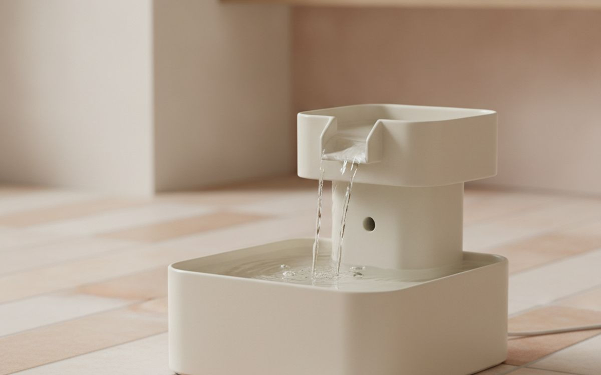
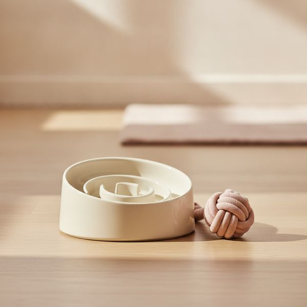
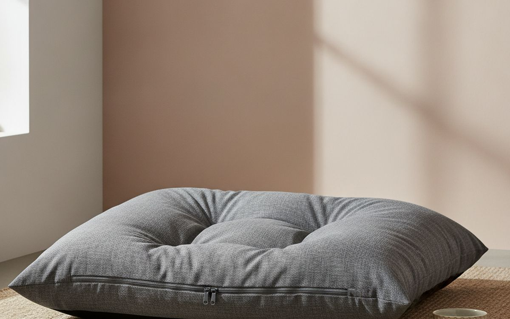
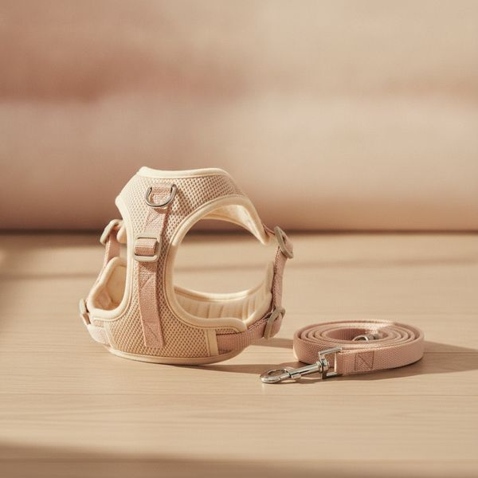
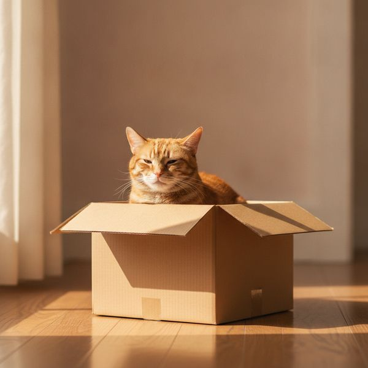
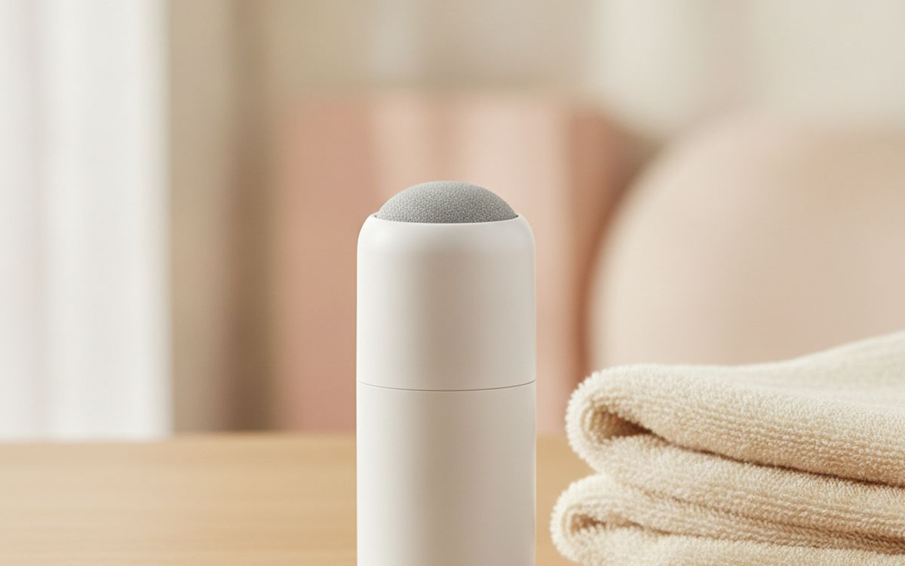
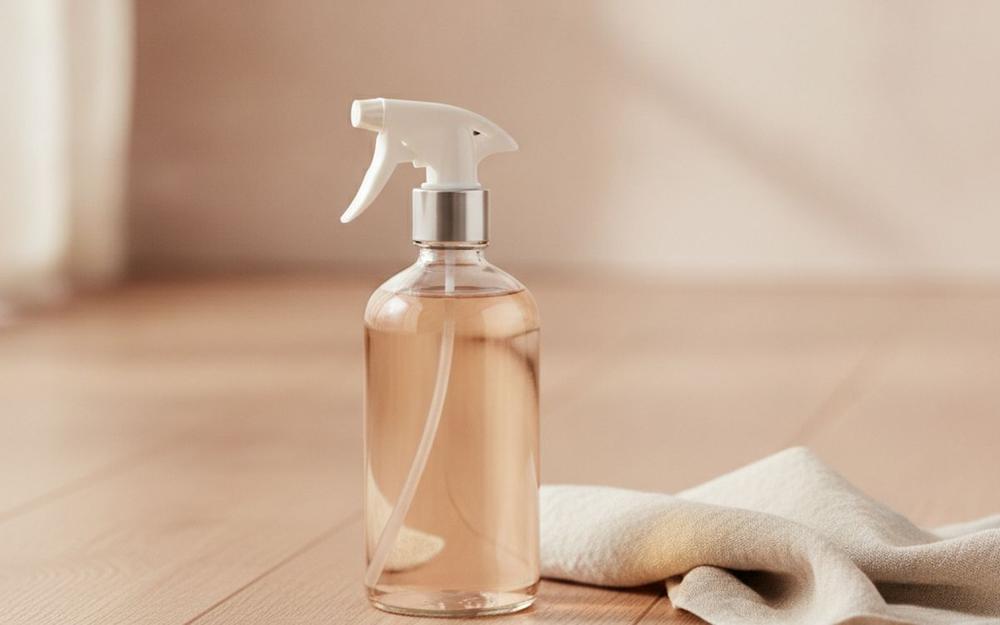
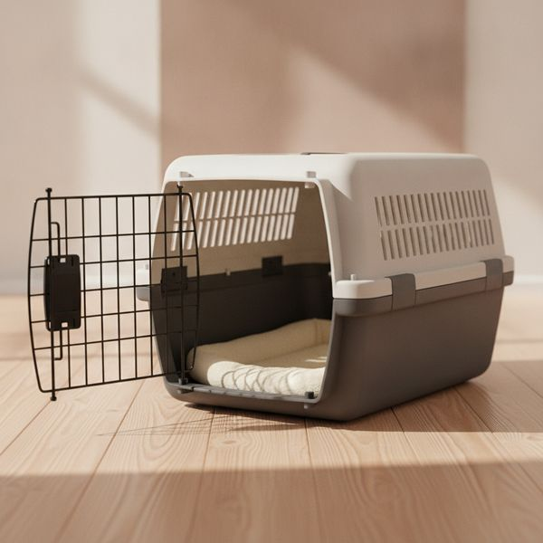
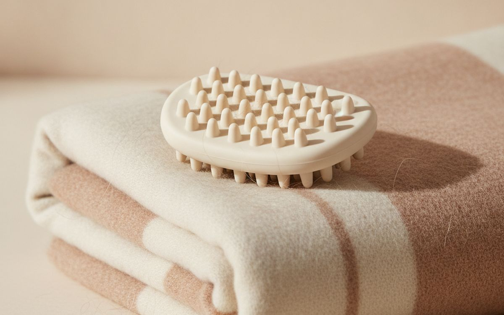
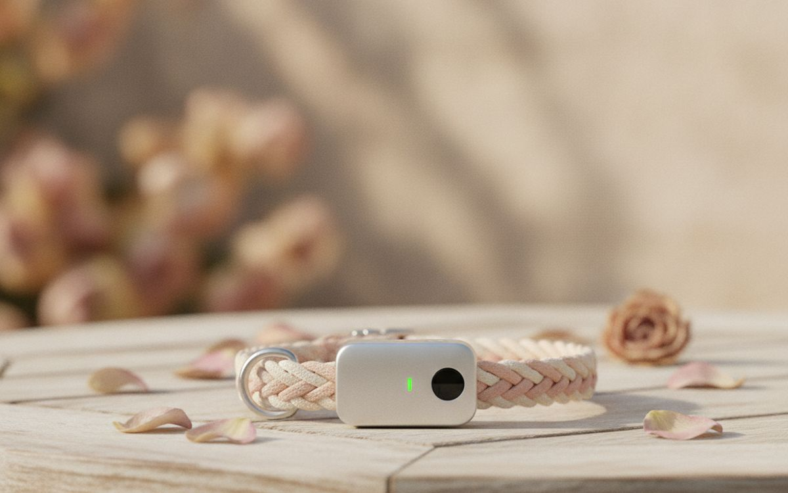

עשרה דברים שמשפרים את החיים של החיה, ולא רק מצטלמים יפה. לפי סדר התרומה האמיתית שלהם.
מחלקת חיות המחמד בנויה סביב איך שהבעלים מרגישים ולא סביב מה שהחיות צריכות. בגלל זה יש קיר שלם של תחפושות ומדף קטן מאוד של הדברים שבאמת משנים את היום של החיה — העשרה, מנוחה נוחה, וגישה אמינה למים.
הרשימה הזאת נוטה לקבוצה השנייה. כמה פריטים בה לא זוהרים ואחד מהם הוא קופסת קרטון, וזו לא בדיחה והיא תוסבר.
שני דברים שלא נעשה. לא נטען טענות בריאותיות על מוצרים — כל דבר שקשור למפרקים, לשיניים, למשקל או להתנהגות של החיה שלכם הוא שיחה עם וטרינר ולא רכישה. ולא נמליץ על אמצעי אילוף מרתיעים, שיש נגדם ראיות טובות ויש להם חלופות טובות יותר.
המחירים הם הערכה נכון לזמן הכתיבה.
גילוי נאות. הקישורים בעמוד הזה הם קישורי שותפים. אם תקנו דרכם אנחנו עשויים להרוויח עמלה, בלי תוספת עלות לכם. זה לא משפיע על מה שנכנס לרשימה או על הסדר שלו.
איך בחרנו
אנחנו נשענים על הנחיות רווחת בעלי חיים, על הסכמה וטרינרית ועל דיווחים של בעלים לאורך זמן, ומעדיפים דברים שמפחיתים שעמום, משפרים מנוחה או מקלים על ההתמדה בטיפול. לא השתמשנו בעצמנו בכל מוצר עם החיות שלנו. שום דבר כאן אינו ייעוץ וטרינרי, ואיפה שהבעיה רפואית או התנהגותית נפנה אתכם לאיש מקצוע ולא למוצר.
השוואה מהירה
המחירים הם הערכה נכון לזמן הכתיבה ומשתנים לעיתים קרובות.
הבחירות

1
הכי שימושי לחתוליםמזרקת מים לחיות מחמד
$35–70
חתולים במיוחד נוטים לשתות מעט מדי, ורבים מהם מתעניינים הרבה יותר במים זורמים מאשר בקערה עומדת — העדפה שמיוחסת להימנעות ממקורות עומדים בטבע. מזרקה מעלה באופן אמין את כמות השתייה, וזה חשוב כי חתולים נוטים לבעיות בדרכי השתן. בחרו קרמיקה או נירוסטה על פני פלסטיק, שנשרט ואוגר חיידקים, ותהיו כנים לגבי התחזוקה: צריך לשטוף שבועית ולהחליף מסנן חודשית, ומזרקה מוזנחת גרועה יותר מקערה נקייה. אם לחיה שלכם יש היסטוריה של בעיות שתן או כליות, זו שיחה עם וטרינר ולא שיחת קניות.
בעד
- גורמת לחתולים לשתות יותר, באופן עקבי
- קרמיקה ופלדה נשארות היגייניות
- פילטרים מסירים טעם של מים עומדים
נגד
- דורשת ניקוי יסודי מדי שבוע
- רעש המשאבה משתנה – דגמים מסוימים מזמזמים

2
ההעשרה המשתלמת ביותרקערת האטה או מתקן האכלה עם חידה
$15–40
רוב חיות המחמד מקבלות את האוכל שלהן בחינם תוך תשעים שניות בערך, וזה משאיר הרבה שעות ביום בלי מה לעשות. מתקן חידה הופך ארוחה לעשר או חמש-עשרה דקות של חיפוש מזון, וזה קרוב יותר לאיך שחיות בנויות לאכול ומוריד את הקצה מהתנהגות שנובעת משעמום. הוא גם מאט כלבים ששואפים את האוכל. תתחילו בקל — חידה קשה מדי פשוט נזנחת או נהרסת — ותשטפו אותה כמו שצריך, כי החריצים שהופכים אותה למעניינת הם גם מקום טוב לשאריות אוכל לשבת בו.
בעד
- הופכת ארוחה של 90 שניות לפעילות של ממש
- מפחיתה התנהגות הנובעת משעמום
- מאטה זללנים
נגד
- חיות מחמד יתייאשו מפאזלים קשים מדי
- החריצים דורשים שטיפה יסודית

3
איפה שהכסף מושקע נכוןמיטה גדולה ורחיצה בסגנון אורתופדי
$60–160
חיות ישנות את רוב היום, ולכן המשטח שהן ישנות עליו הוא אחת הרכישות המשפיעות ביותר ברשימה. שני המפרטים שחשובים הם ציפוי שבאמת מתפרק וניתן לכביסה במכונה — מיטות בלי כזה הופכות לבלתי שמישות תוך שנה — ומספיק גודל כדי שהחיה תוכל להתמתח לגמרי ולא להתכרבל מתוך אילוץ. קצף תומך ועבה נוח יותר לחיות מבוגרות או גדולות. נתאר אותו כתומך ולא כטיפולי: הנוחות אמיתית, אבל אם החיה שלכם נוקשה, איטית במדרגות או נמנעת מקפיצות, זה ביקור אצל וטרינר.
בעד
- משפיעה על רוב שעות היום של חיית המחמד שלכם
- כיסויים רחיצים מאפשרים שימוש לאורך שנים
- ספוג עבה מתאים לחיות מבוגרות וגדולות
נגד
- המיטות הטובות יקרות בגדלים הגדולים
- נוחות היא לא טיפול – התייעצו עם וטרינר במקרה של נוקשות

4
עדיפה על קולר לטיוליםרתמת חזה בצורת Y או עם חיבור קדמי
$25–60
כדאי להימנע מלחץ על גרון הכלב מקולר בזמן משיכה, ורתמה מותאמת היטב מפזרת את העומס על החזה במקום. חפשו במיוחד חזית בצורת Y שיושבת מחוץ למפרק הכתף, כי דגמים עם רצועה אופקית לרוחב החזה מגבילים את הכתף בטווח התנועה הטבעי שלה. נקודת חיבור קדמית עוזרת להסיט כלב שמושך, אבל תתייחסו לזה ככלי ניהול בזמן שאתם מאלפים ולא כפתרון — משיכה היא בעיית אילוף, והרתמה רק קונה לכם טיול רגוע יותר בינתיים. מדדו את היקף החזה; מידה לפי משקל בלבד אינה אמינה.
בעד
- מונעת לחץ על הגרון
- עיצובי Y-front משאירים את הכתפיים חופשיות
- תפס קדמי עוזר בזמן אילוף
נגד
- לא מהווה תחליף לאילוף
- בחירת מידה לפי משקל אינה אמינה – מדדו

5
הגרסה החינמית באמת עובדתקופסת קרטון, ומדפים לחתולים
$0–90
חתולים צריכים מרחבים סגורים וגובה, בערך בסדר הזה. הסגירות עוסקת בתחושת ביטחון מספקת כדי לישון עמוק, וקופסת קרטון פשוטה עונה על זה לגמרי ובחינם — מחקרים במקלטים מצאו שקופסאות הפחיתו מדידה סטרס אצל חתולים חדשים. גובה חשוב כי מרחב אנכי למעשה מגדיל דירה קטנה ומאפשר לחתול לסגת מכלב, מפעוט או מאורח. מדפי קיר או עץ גבוה מספקים את זה. תוציאו את הכסף על המרחב האנכי אם אתם מוציאים אותו בכלל, ותנו לקופסה להיות קופסה.
בעד
- האפשרות החינמית יעילה באמת
- מרחב אנכי מגדיל דירה קטנה
- מספק לחתול מקום מפלט
נגד
- מדפי קיר דורשים קיבוע בטוח
- חתולים מתעלמים מכל דבר שמונח במקום הלא נכון

6
כלי קטן, מונע בעיה אמיתיתקוצץ ציפורניים איכותי או משחזת
$15–45
ציפורניים שגדלו יותר מדי משנות את אופן העמידה וההליכה של החיה, אז זו תחזוקה בסיסית ולא גנדרנות טיפוח. משחזת בדרך כלל קלה יותר לחיות עצבניות מאשר קוצץ כי היא מסלקת את הלחץ הפתאומי ואת הנקישה הרועשת, אם כי היא מייצרת רעידה ורעש משלה שחלק מהחיות אוהבות פחות. מה שלא תבחרו, החלק החשוב הוא להימנע מהחלק החי — כלי הדם שבתוך הציפורן — שקל לראות בציפורניים בהירות וכמעט בלתי אפשרי בכהות. אם לחיה שלכם ציפורניים שחורות או שהיא שונאת שמחזיקים לה את הרגליים, לתת למטפח או לאח וטרינרי לעשות את זה זו בחירה סבירה לגמרי.
בעד
- מונע בעיה של ממש ביציבה ובהליכה
- משייפים מתאימים לחיות שנרתעות מה'קליק' של הקוצץ
- זול, ומחזיק מעמד שנים
נגד
- פגיעה בכלי הדם בציפורן כואבת וגורמת לדימום
- הרעידות של המשייף מפריעות לחיות מסוימות

7
זה שתקנו שוב ושובמנקה אנזימטי
$15–30
חומר ניקוי ביתי רגיל מסיר את הכתם הנראה ומשאיר את סמני הריח, ובגלל זה חיות חוזרות לאותה נקודה וחוזרות על התאונה. מנקים אנזימטיים מפרקים את התרכובות האלה במקום להסוות אותן, וזה מטפל בסיבה ולא בסימפטום. שתי נקודות מעשיות. לעולם אל תשתמשו בחומר על בסיס אמוניה על שתן של חיה, כי אמוניה היא מרכיב בשתן ולמעשה מסמנת שהמקום הזה הוא שירותים. ותנו לאנזימים זמן — המוצרים האלה צריכים להישאר רטובים כמה דקות כדי לעבוד, אז הרטבה יסודית עדיפה על ניגוב מהיר.
בעד
- מסיר את סימון הריח, לא רק את הכתם
- מונע מחיות מחמד לחזור לאותו המקום
- זול יחסית להחלפת שטיח
נגד
- צריך להישאר רטוב למשך מספר דקות
- אסור לשלב עם חומרי ניקוי מבוססי אמוניה

8
קנו לפני שתצטרכוכלוב הובלה בטוח ומאוורר
$40–110
הכלוב נקנה בחיפזון ביום גרוע, וזה בדיוק הזמן הלא נכון לבחור אחד. קחו דגם קשיח שנפתח מלמעלה ולא רק מלפנים: להוריד חתול מבוהל לתוך כלוב מלמעלה הרבה יותר קל מלדחוף אותו דרך דלת קדמית קטנה בזמן שהוא נועץ רגליים במסגרת. השאירו אותו בחדר באופן קבוע עם שמיכה בפנים כדי שיהפוך לרהיט ולא לאות שמשהו לא נעים עומד לקרות. ההרגל הבודד הזה מסלק את רוב המאבק. בדקו בנפרד את דרישות חברות התעופה אם אתם מתכננים לטוס, כי הן ספציפיות ונאכפות בקפדנות.
בעד
- הרבה יותר קל להכניס את החיה מלמעלה
- השארתו גלויה בבית מפיגה את הפחד ממנו
- דפנות קשיחות מגינות ברכב
נגד
- מסורבל לאחסון אם לא משאירים אותו גלוי
- המידות המאושרות לטיסה משתנות – בדקו בנפרד

9
הכי טוב לספה, וגם לחיהמברשת גומי או כלי להסרת פרווה נושרת
$15–40
הברשה קבועה מסירה שיער נושר לפני שהוא מגיע לרהיטים שלכם, מפחיתה את כדורי השיער שנוצרים כשחתולים מלקקים את עצמם, ונותנת לכם תירוץ שבועי להעביר ידיים על החיה — וכך רוב הבעלים מגלים גושים, קרציות ונקודות רגישות מוקדם. מברשת גומי רכה מתאימה לפרוות קצרות ולרוב החתולים, וזו זו שחיות נוטות ליהנות ממנה ולא רק לסבול אותה. כלים אגרסיביים בסגנון להב מסירים פרווה מהר אבל יפגעו בפרווה אם משתמשים בהם יותר מדי, אז תעבדו בעדינות ותפסיקו לפני שהעור מאדים.
בעד
- פחות שיער על הרהיטים והבגדים
- טיפוח שבועי עוזר לזהות בעיות בשלב מוקדם
- רוב חיות המחמד נהנות מהמברשת מגומי
נגד
- כלים עם להבים עלולים להזיק לפרווה בשימוש יתר
- פרווה ארוכה או כפולה דורשת מברשת אחרת

10
מותנה — קראו את ההסתייגויותאיתורית GPS, לחיות שיוצאות החוצה
$50–120 plus subscription
לחתול שיוצא החוצה או לכלב שאי פעם השתחרר מרצועה, מיקום GPS חי באמת מרגיע בצורה שצ'יפ אינו — צ'יפ עוזר רק אחרי שמישהו אחר כבר מצא את החיה ולקח אותה לסריקה. אבל קראו את הפרטים בעיון לפני הקנייה. רוב יחידות ה-GPS האמיתיות דורשות מנוי חודשי, אז מחיר המדבקה אינו העלות. חיי הסוללה במעקב חי נמדדים בימים ולא בשבועות. ולחתולים, המשקל חשוב: איתורית צריכה להיות הרבה מתחת לחמישה אחוזים ממשקל הגוף, על קולר בטיחות עם שחרור מהיר.
בעד
- מיקום בזמן אמת, בניגוד לשבב
- שקט נפשי אמיתי כשמדובר בחיות שמסתובבות חופשי
- התראות 'גדר וירטואלית' (Geofence) בדגמים מסוימים
נגד
- דמי המנוי המתמשכים הם העלות האמיתית
- הסוללה מחזיקה ימים, לא שבועות – והמשקל הוא שיקול משמעותי עבור חתולים
שאלות נפוצות
האם החתול שלי באמת צריך מזרקה?
לא בהכרח, אבל הרבה חתולים שותים הרבה יותר ממים זורמים, ושתייה מועטה קשורה לבעיות בדרכי השתן. אם החתול שלכם כבר שותה יפה מקערה, קערה רחבה ורדודה שמרוחקת מהאוכל מספיקה.
האם קולרים נגד נביחות או קולרי שוק הם רעיון טוב?
לא. הראיות מצביעות על כך שאמצעים מרתיעים מגבירים פחד ותוקפנות בלי לטפל בסיבה, ורוב הגופים להתנהגות וטרינרית ממליצים נגדם. נביחות מוגזמות הן בדרך כלל שעמום, חרדה או בהלה — שווה לאבחן לפני שקונים משהו.
מהי הרכישה הכי מוערכת יתר על המידה לחיות מחמד?
בגדים, רוב הצעצועים הממותגים, ומאכילים אוטומטיים שנקנים מטעמי נוחות ולא מתוך צורך. מאכיל באמת שימושי ללוח האכלה קפדני, ובעיקר מיותר אחרת.
איך מונעים שעמום מחתול שחי בבית?
מרחב אנכי, נוף מהחלון, כמה דקות משחק עם מקל ביום, והאכלה דרך חידה במקום קערה. ארבעת אלה עולים מעט מאוד ומטפלים בבעיה האמיתית טוב יותר מכל צעצוע בודד.
← כל המדריכים
כשותפים של אמזון אנחנו מרוויחים עמלה מרכישות מזכות. המחירים והזמינות נכונים לזמן הפרסום ועשויים להשתנות.